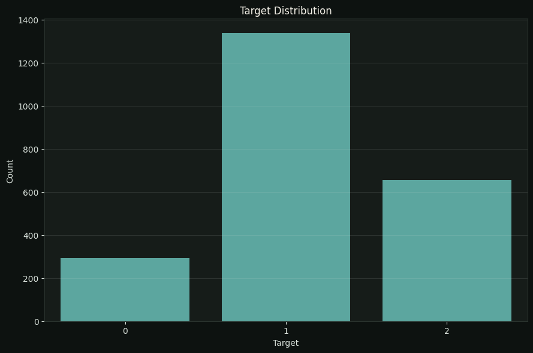
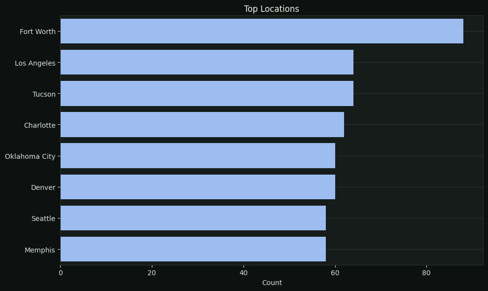
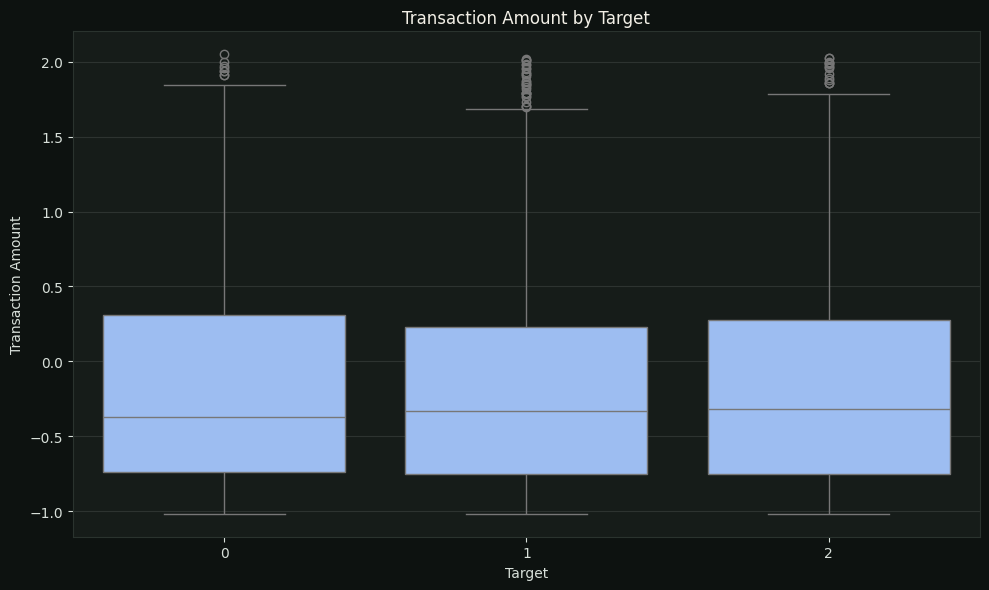
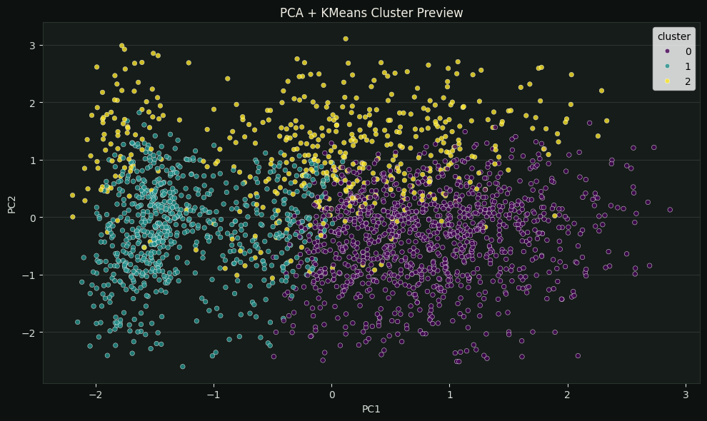

Finding Patterns Behind Banking Data.
This project explores banking transaction data to uncover patterns, behavioral segments, and predictive signals. It combines exploratory data analysis, visualization, clustering, and classification to turn structured transaction data into a clearer analytical story.
From Transaction Data to Actionable Patterns
The project combines descriptive and predictive approaches to understand what the data contains, how records group together, and how available features can support classification.




Key Findings
- The analysis combines segmentation and classification to provide complementary views of the same transaction data.
- PCA visualization helps communicate cluster structure visually rather than relying only on numerical cluster labels.
- A compact feature set keeps the classification workflow interpretable and lightweight while preserving strong benchmark performance.
Model & Methodology
RandomForestClassifier provides the supervised benchmark, while KMeans is used to explore potential groupings in the transaction data. PCA is then used as a visual aid to communicate cluster structure more intuitively.